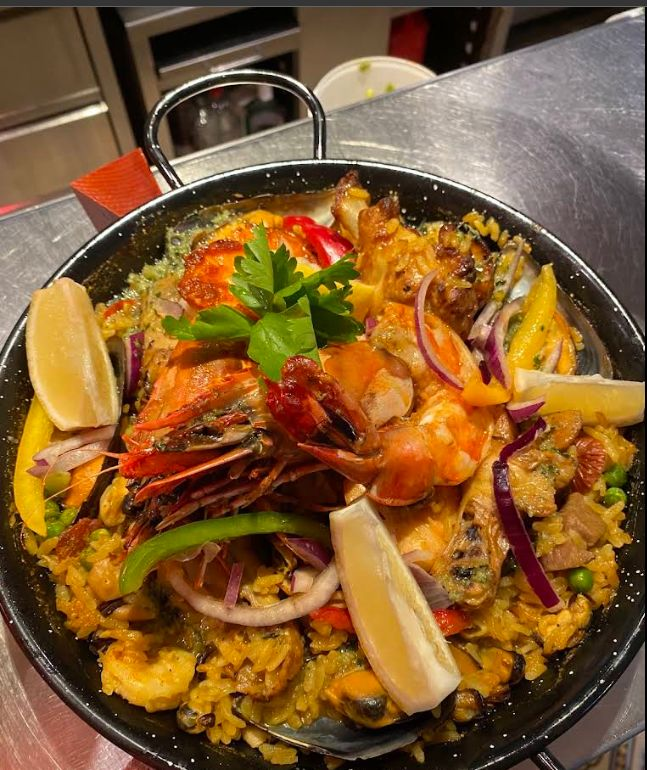
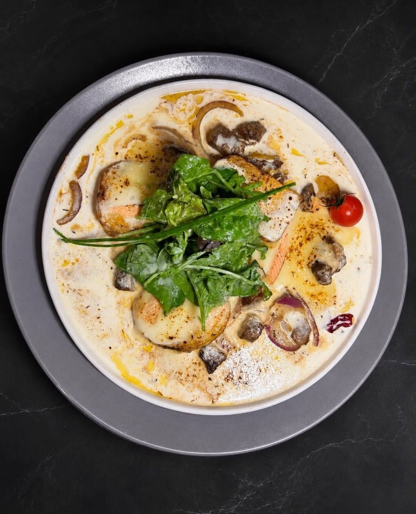
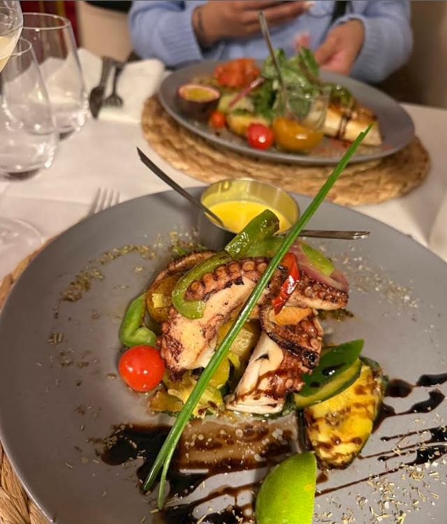
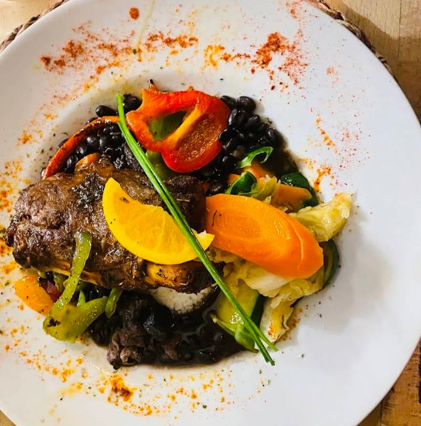
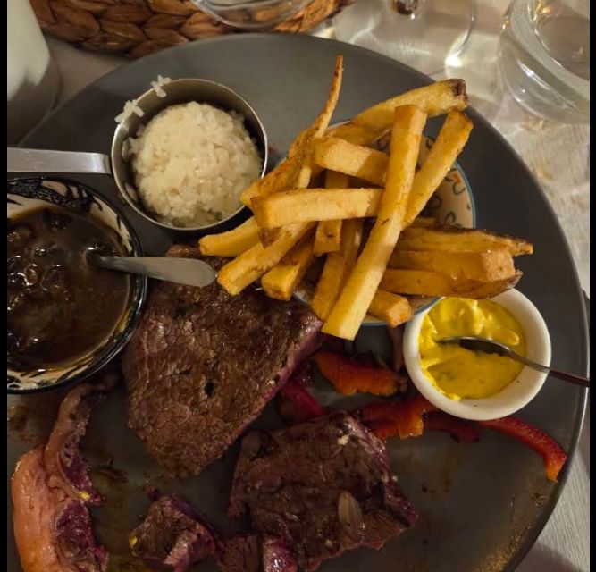
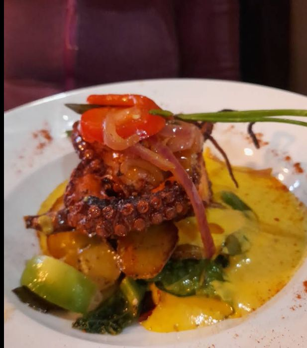
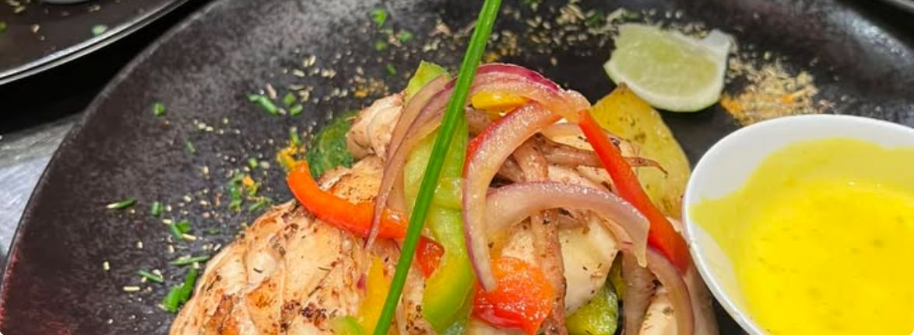
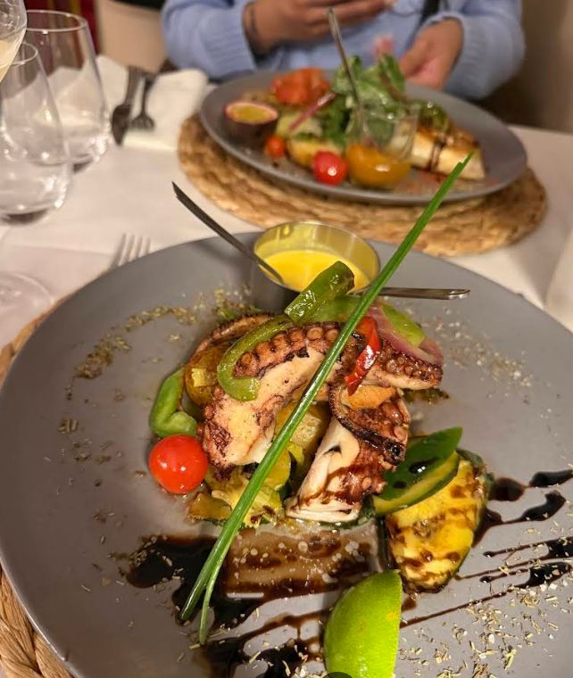
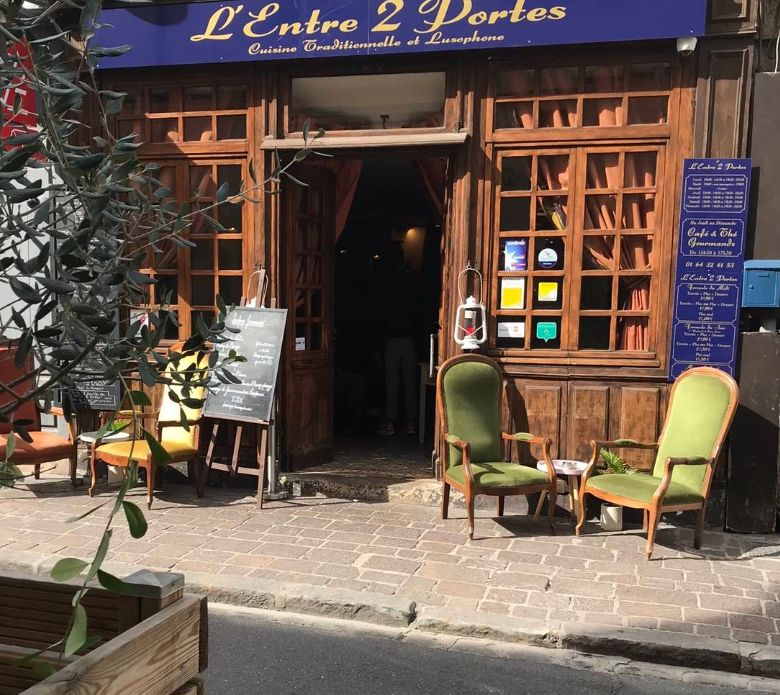
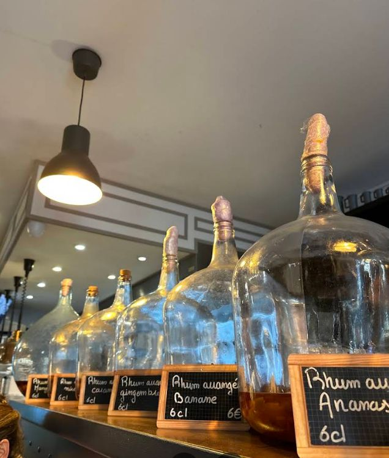

L'entre2portes
Cuisine traditionnelle française et spécialités du Brésil, du Cap-Vert et du Portugal, au cœur de Moret-sur-Loing.
Dans l'assiette







Une table française qui parle portugais
D'un côté, les classiques de la cuisine traditionnelle française. De l'autre, les saveurs lusophones : le Brésil, le Cap-Vert et le Portugal. Les deux se croisent dans l'assiette, au gré de la carte et des suggestions du moment.
- France
- Brésil
- Cap-Vert
- Portugal

« Chaque plat était un vrai régal : des produits de qualité, une cuisine savoureuse et une présentation soignée. »
« J'ai pris une picanha avec frites maison, riz et feijoada, une tuerie. »
« L'équipe est accueillante et chaleureuse, je recommande vivement ce restaurant. »
« Un petit restaurant plein de douceur dans sa déco. Les plats sont originaux, pleins de saveurs. »
La carte
Consultable avant de venir, sur téléphone comme sur ordinateur. Elle se met à jour en quelques minutes à chaque changement de saison ou de suggestion.
Entrées
- … €
- … €
- … €
Plats
- Sauté de bœuf au maroilles… €
- … €
- … €
- … €
Desserts et café gourmand
- … €
- … €
- Café ou thé gourmand… €
Mise en page d'exemple : les plats et les prix seront repris à l'identique de votre carte.

Deux portes, deux cuisines
Rue Grande, la porte de Samois d'un côté, la porte de Bourgogne de l'autre. Le restaurant s'est installé entre les deux, au cœur de la cité médiévale. Le nom vient de là.
Il raconte aussi ce qui se passe en cuisine : d'un côté la tradition française, de l'autre le Brésil, le Cap-Vert et le Portugal.
L'histoire de la maison, racontée par l'équipe : qui est aux fourneaux, d'où viennent les recettes, comment l'aventure a commencé rue Grande.
À écrire avec vous
Les rhums arrangés de la maison
Alignés sur le bar dans leurs grandes bonbonnes, ils macèrent avec les fruits et les épices. Servis en verre de 6 cl, pour finir le repas ou prolonger la soirée.
- Banane
- Gingembre
- Ananas
Le vendredi soir, la terrasse passe aux chandelles
Chaque vendredi, la terrasse de la rue Grande se dresse en nappes blanches et s'éclaire à la bougie. Un dîner chaleureux et raffiné, au pied des vieilles pierres de Moret.
Le nombre de places est limité : pensez à réserver votre table.
Venir rue Grande
Au 25 rue Grande, entre la porte de Samois et la porte de Bourgogne.
Réserver une table
01 64 32 61 53Horaires
| Jour | Midi | Soir |
|---|---|---|
| Lundi | 12h30 – 14h30 | 19h30 – 22h00 |
| Mardi | Fermé | |
| Mercredi | Fermé | |
| Jeudi | 12h30 – 14h30 | 19h30 – 22h00 |
| Vendredi | 12h30 – 14h30 | 19h30 – 22h00 |
| Samedi | 12h30 – 14h30 | 19h30 – 22h30 |
| Dimanche | 12h30 – 14h30 | Fermé le soir |